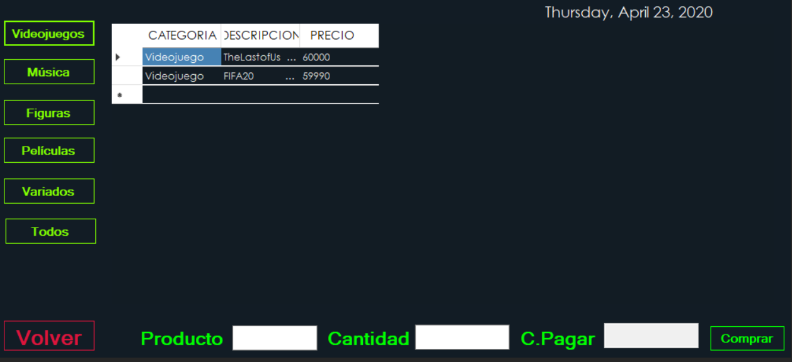
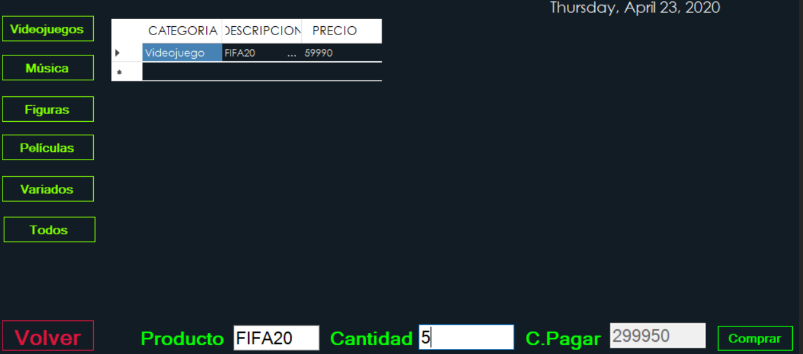

Despues de iniciar sesion se presentara esta pantalla
A la izquierda hay varios botones que al hacerles click hace que solo se vea la correspondiente categoría.
Después de decidir cuál artículo se desea comprar se escribe la descripción de este mismo y luego la cantidad deseada,
solo se pueden comprar un maximo de 9 articulos por compra
Si no hay stock del producto deseado el programas se lo señalara

En la imagen anterior se muestra como al darle click en el botón de videojuegos muestra solo los juegos disponibles en ese momento.

Con esta imagen se ejemplifica que después de escribir el producto deseado y la cantidad, el programa indica si hay esa cantidad disponible y la cantidad a pagar.
Una vez terminada la compra se hace click en el botón de volver y ya se puede salir con el botón de X en la pantalla del login.